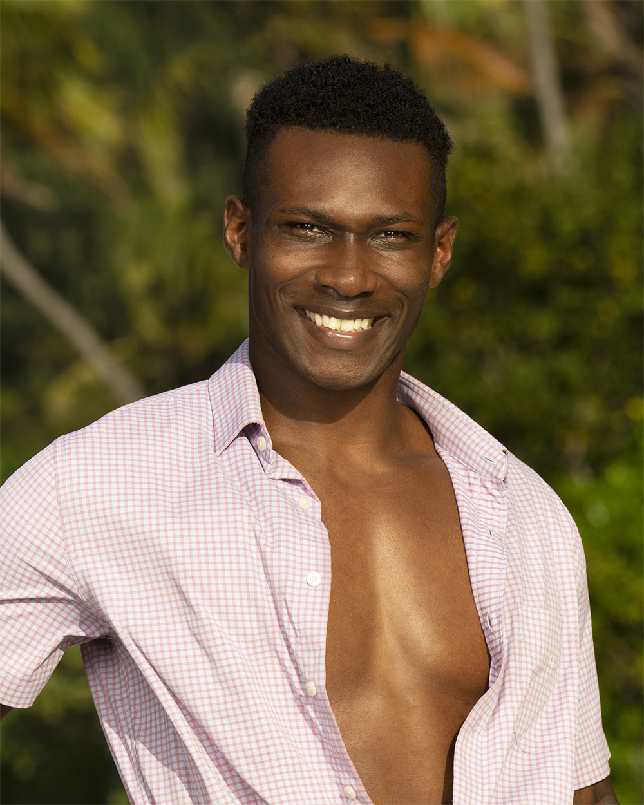

Quintavius "Q" Burdette
Vatu Tribe
Age
31
Previous Season
46 (6th Place)
Status
Active

Season 46

Current
About
Q Burdette brought plenty of charm and controversy to Season 46, finishing 6th. He's perhaps best remembered for being the subject of another player's ire when he won an Applebee's reward. His strategy for Season 50 is clear: "If you've ever sat at the end, whether you've won, lost or whatever … I don't want to work with you long term. I want you out of the game." His former rival Tiffany Ervin is on the opposing Kalo tribe.
Season 50 Game
Q shined as the hero of the premiere, stepping up for the supply challenge for Vatu and carrying injured Kyle Fraser through the immunity challenge. He landed in the dominant early alliance on Vatu alongside Colby, Stephenie, Kyle, and Genevieve.